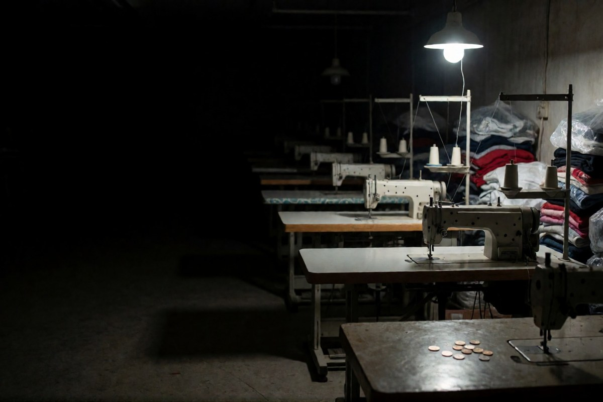

Cronaca · 6 novembre 2026
Patrizia Pepe e Dixie in amministrazione giudiziaria per un anno

Il tribunale di Firenze accoglie la richiesta della Procura di Prato: le due società non sono indagate, ma secondo i giudici non hanno vigilato sui laboratori a cui affidavano parte del lavoro. Sei euro l'ora, dicono le carte.
di Franco Zanghì
Il 6 novembre 2026 la sezione misure di prevenzione del tribunale di Firenze ha disposto per un anno l'amministrazione giudiziaria di due aziende della moda: Tessilform, la società del marchio Patrizia Pepe, e Dixie. Hanno sede nel Fiorentino, a Campi Bisenzio e a Signa. La misura è stata chiesta dalla Procura di Prato, guidata da Luca Tescaroli, e può essere prorogata.
Conviene dire subito che cosa non è. Non è una condanna, e le due società non sono indagate. L'amministrazione giudiziaria è una misura di prevenzione: secondo il tribunale, Tessilform e Dixie hanno agevolato per colpa lo sfruttamento del lavoro, cioè non hanno vigilato sui laboratori a cui affidavano parte della produzione, né verificato se quei fornitori fossero in condizione di lavorare in regola.
La filiera, e che cosa dicono le carte
I fornitori sono piccole ditte della zona di Prato e di Montemurlo che svolgevano stiratura, smacchiatura, imbustamento, riparazioni e lavaggi. Indagati sono i titolari di quelle ditte, una coppia di imprenditori, per intermediazione illecita e sfruttamento del lavoro.
Secondo l'Ansa, nei laboratori ci sarebbero state retribuzioni inadeguate, ritmi estenuanti, ferie e riposi negati, buste paga artefatte, lavoratori in nero e senza permesso di soggiorno. Il Giornale, che ha letto il provvedimento, aggiunge le cifre: sei euro l'ora, a volte sette, turni fino a dodici ore, lavoro nei fine settimana, straordinari non pagati. Dalle testimonianze emergono un certificato medico strappato davanti a un operaio e la minaccia di bloccare la pratica del permesso di soggiorno a chi chiedeva un giorno libero. Sono accuse, e andranno provate nel processo a carico dei titolari.
Diciotto lavoratori hanno collaborato alle indagini, e per loro è stato chiesto il permesso di soggiorno per motivi di giustizia. Sempre secondo il Giornale, fra il 2023 e il 2025 una di quelle ditte ha fatturato a Tessilform oltre 490 mila euro, e verso Dixie le fatture superano i 449 mila; fra marzo e ottobre 2025 parte della produzione sarebbe stata spostata da Prato a Montemurlo, in società intestate ad altri ma gestite dalle stesse persone.
Il punto dei giudici: i controlli che non c'erano
Il passaggio più duro del provvedimento riguarda la vigilanza. Secondo il Giornale, nei documenti aziendali non c'è traccia di verifiche preventive sui fornitori, e per Dixie i giudici parlano di un vuoto assoluto. Tessilform, sempre secondo il Giornale, fa sapere di aver interrotto da oltre un anno i rapporti con i fornitori coinvolti e di aver rafforzato i controlli per conto proprio.
Come funziona la misura
I dirigenti restano al loro posto. Accanto a loro, per un anno, lavora un amministratore nominato dal tribunale, con il compito di rimettere in regola la filiera e di riferire al giudice. Non è una confisca e non è un sequestro dell'azienda: è un affiancamento con poteri di controllo.
Il Post ricorda che Prato è la seconda procura in Italia a usare questo strumento nel settore della moda, dopo Milano, che lo ha applicato a diversi marchi del lusso. È uno schema che si sta consolidando: non si colpisce il marchio per quello che ha fatto, ma per quello che non ha controllato.
Resta la questione di fondo. Un capo che in negozio costa centinaia di euro non può reggersi su sei euro l'ora all'ultimo anello della catena. Dare in appalto una lavorazione non trasferisce anche la responsabilità di sapere chi la esegue, e in quali condizioni.
Fonti
- Il Post, «Dixie e Patrizia Pepe sono state messe in amministrazione giudiziaria», 6 novembre 2026
- il Giornale, «Caporalato nella moda, Patrizia Pepe e Dixie sotto amministrazione giudiziaria», 6 novembre 2026
- Milano Finanza, «Caporalato nella moda, Patrizia Pepe e Dixie sotto amministrazione giudiziaria», 6 novembre 2026
- Ansa Toscana, lancio del 6 novembre 2026 sulle condizioni di lavoro contestate
Le due società non sono indagate: l'amministrazione giudiziaria è una misura di prevenzione fondata sull'agevolazione colposa. Il procedimento penale riguarda i titolari dei laboratori fornitori, per i quali vale la presunzione d'innocenza. Gli importi delle fatture e i dettagli delle testimonianze sono attribuiti al Giornale, che ha consultato il provvedimento.